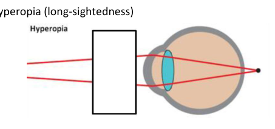
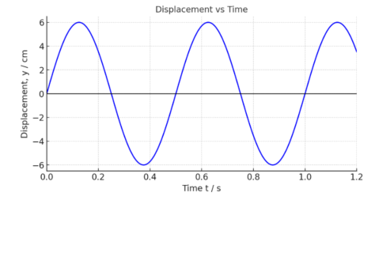
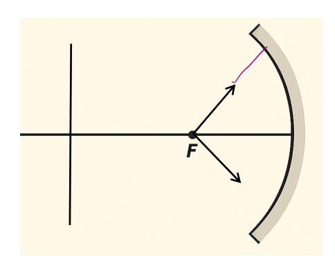
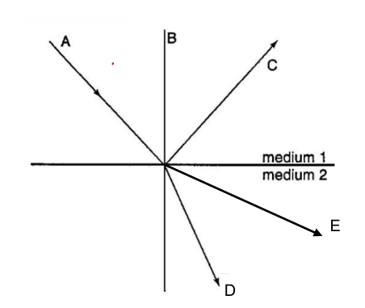

Section A: Multiple choice (14 marks)
Which of the following is a longitudinal wave?
Which of the following is the unit of frequency?
A wave has a frequency of 50 Hz and a wavelength of 2 m. What is its speed?
v = f × λ = 50 × 2 = 100 m/s.
Which property of a wave is related to the loudness of a sound?
Which of the following is an example of refraction?

Which type of lens is used to correct hyperopia (long-sightedness)?
Which of the following materials would be best at transferring heat by conduction?
When a red light and a green light are shone on a white screen, what is the resulting colour?
Which of the following is an example of incandescence?
Which state of matter has particles vibrating in fixed positions?
Which method of heat transfer does not need a medium?
Which part of the human eye controls the amount of light entering it?
A beam of sunlight shines through two filters in a row: first yellow, then magenta. Which option correctly describes which colours each filter absorbs and transmits?
So only red light gets through both filters.

The graph shows the displacement of a wave over time. Which statement about this wave is correct?
Section B: Short answer (26 marks)
Question 1 (6 marks)
A sound wave has a frequency of 400 Hz and a speed in air of 340 m/s.
Calculate the wavelength.
λ = v / f = 340 ÷ 400 = 0.85 m.
Calculate the period of the wave.
T = 1 / f = 1 ÷ 400 = 0.0025 s.
If the wave reflects from a wall 85 m away, calculate how long it takes until the echo is heard.
The sound travels 85 × 2 = 170 m. t = d / v = 170 ÷ 340 = 0.5 s.
Question 2 (5 marks)
A concave mirror is used in a torch; the globe is placed at the focal point F.

On paper: (a) draw two incident rays from F (extending the rays shown) to show how they reflect from the mirror; (b) for one of the reflected rays, show the normal, the incident ray and the reflected ray. Describe your diagram, then compare.
a. Rays from the focal point reflect off the mirror and travel back parallel to the central axis, making a straight beam (2 marks).
b. At the point where the ray hits the mirror, the normal is drawn at 90° to the mirror's surface (it points towards the mirror's centre of curvature); the incident and reflected rays are labelled, with the angle of incidence equal to the angle of reflection (3 marks).
Question 3 (4 marks)
The diagram represents a situation involving the refraction of light.

- Which path does the light take if medium 1 is faster than medium 2? A →
- Which path does it take if medium 2 is faster than medium 1? A →
If the light slows down entering medium 2, it bends towards the normal (D). If it speeds up, it bends away from the normal (E); at a large enough angle it would be totally internally reflected (C).
Explain how either of the paths occurs.
Light bends away from the normal if it speeds up (A → E) and towards the normal if it slows down (A → D). In an extreme case, if the angle is greater than the critical angle, total internal reflection occurs (A → C). Some reflection (A → C) happens at all times.
Question 4 (3 marks)
A pot of water, starting at 20 °C, is heated until it boils.
Convert the starting temperature to kelvin.
What is the main method of heat transfer inside the water?
Why does the pot cool down when the lid is on and it is sitting on an insulated mat?
Heat still escapes by conduction from the water through the metal walls to the air, and by radiation from the hot metal walls to the surroundings.
Explain how perspiration (sweating) cools the body, using the particle model. Include the role of kinetic energy.
Evaporating the liquid water in sweat into a gas needs an increase in the particles' kinetic energy (1 mark). The water absorbs this heat energy from the body to change from a liquid into a gas, so the body is cooled (1 mark).
Question 6 (6 marks)
On a hot summer day, the Sun heats the land much faster than the ocean. This uneven heating can lead to a sea breeze.
What is the main method of heat transfer responsible for this air movement?
Briefly explain how this method leads to the formation of a sea breeze.
The water heats up more slowly than the land, so the air over the land becomes warmer than the air over the water (1 mark). The warm air over the land rises, creating a convection current, and cool air moves in from the sea to replace it: the sea breeze (1 mark).
How do radiation, conduction of heat to the air, and convection each contribute to the sea breeze?
- Radiation: energy travels from the Sun to the land (1 mark).
- Conduction: heat passes from the hot land to the air touching it (1 mark).
- Convection: the warmed air rises and cooler air from over the sea flows in to replace it (1 mark).